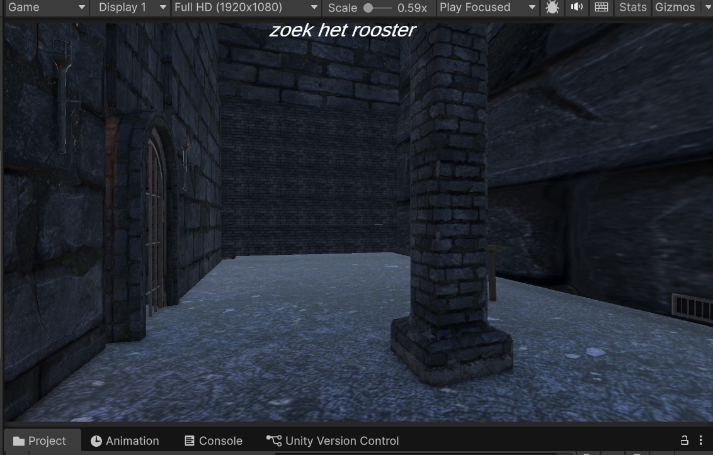
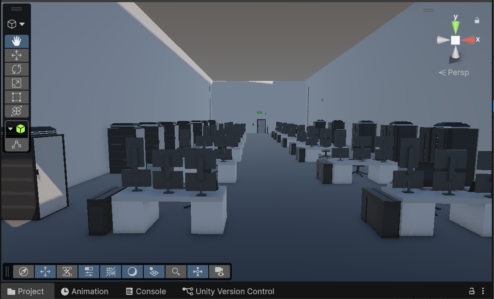
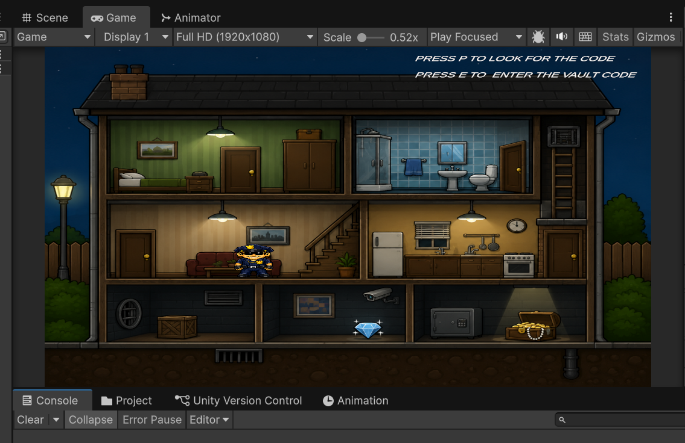
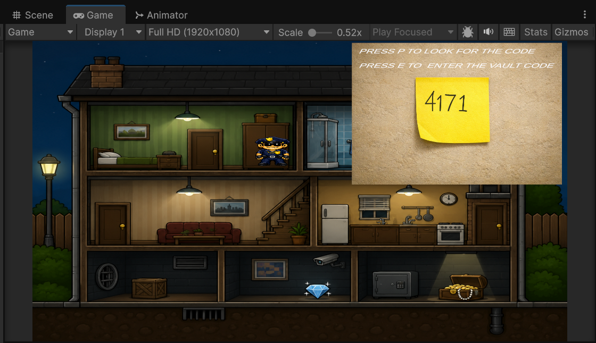
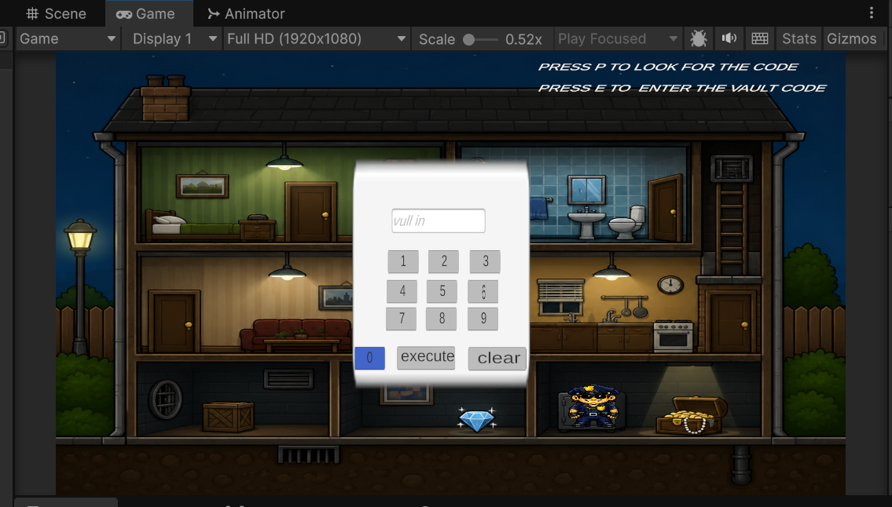
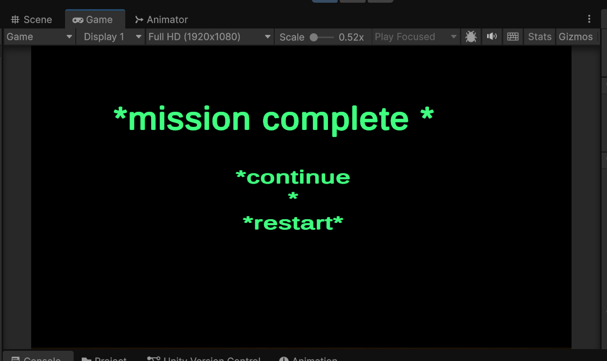
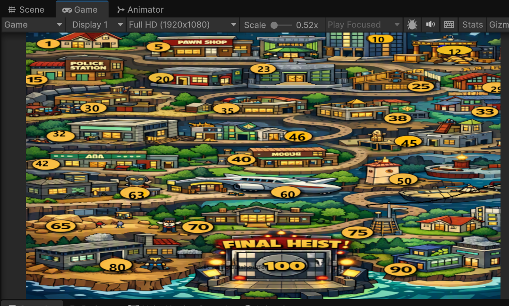
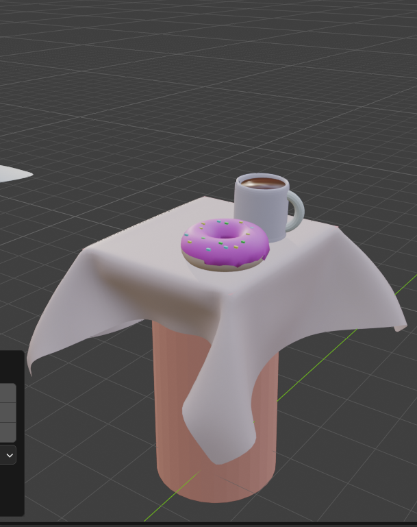
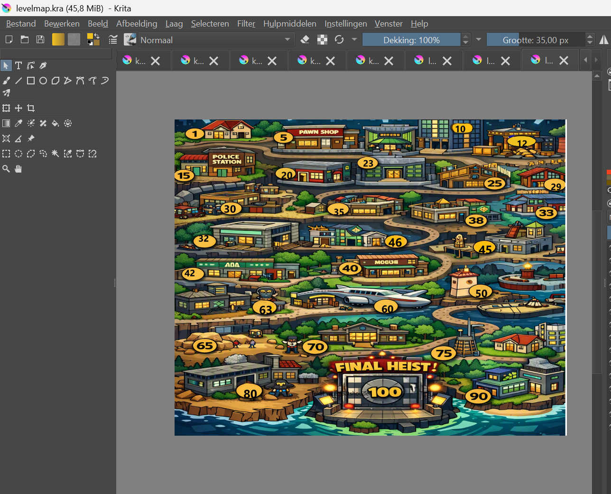
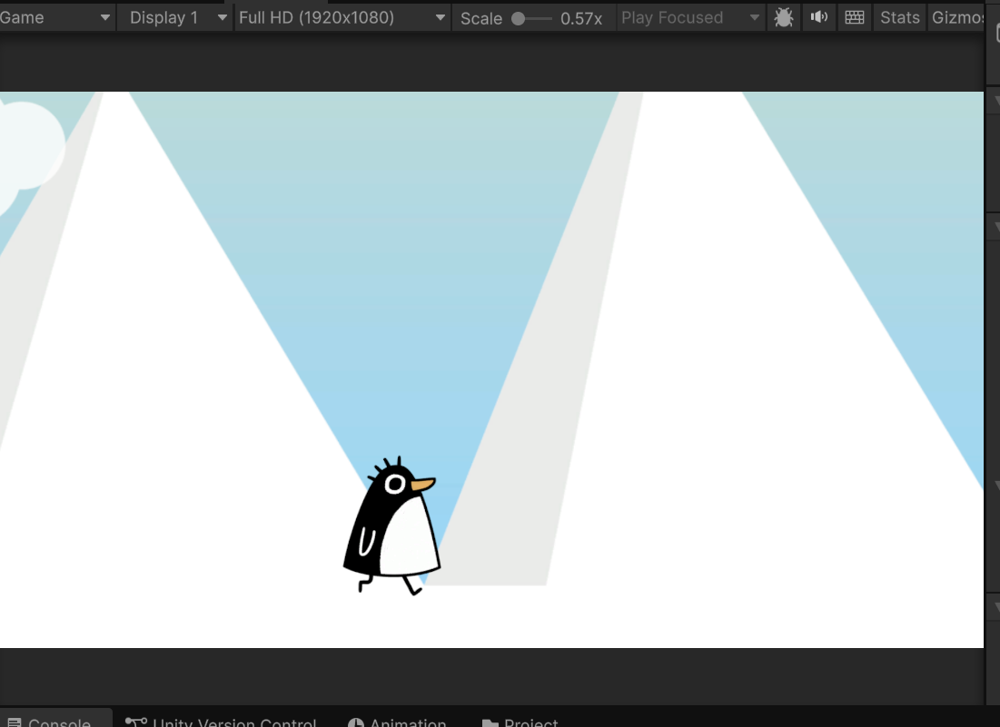

Welkom, ik ben Nadir Laouini
17 jaar, Software Developer student. Ik werk met JavaScript, game development, embedded systemen en ik ontwerp mijn eigen custom PCB’s.
Projecten
Embedded led Module + Custom PCB
Dit was mijn tweede zelfontworpen custom PCB‑project,
volledig gemaakt in KiCad.
Hiermee laat ik zien dat ik niet alleen software ontwikkel, maar ook hardware kan ontwerpen en begrijpen hoe
elektronica en embedded systemen samenwerken.


unity game- shawshank prison
Dit is een demo‑versie van mijn Shawshank Prison game die ik in Unity heb gebouwd.
Ik laat hier vooral de systemen en gameplay‑mechanics zien die ik al heb gemaakt.
De beelden die je ziet zijn dus demo‑beelden, niet de volledige game.


unity-Cop robber
Cop Robber is een cartoon‑crime game die ik zelf aan het bouwen ben in Unity.
Het is nog in ontwikkeling,
maar ik heb al een grote demo gemaakt met tot 100 huisnummers level‑concepten.
De game draait om het idee dat jij als speler inbreekt, ontsnapt, codes kraakt en beveiliging
ontwijkt in een wereld van een corrupte cop.





blender
Ik werk met Blender en
Krita voor het maken van 2D‑
en 3D‑assets voor mijn projecten.
Het zijn niet mijn
allersterkste punten, maar ik gebruik ze wel regelmatig en ik word er steeds beter in.
Voor mij zijn Blender en
Krita vooral tools om ideeën snel visueel te maken,
bijvoorbeeld voor game‑concepten,
prototypes of kleine assets.


Noot Noot the Game
Dzee game gaat over een pinguïn die is weg gelopen van zijn groep tijdens een sneeuwstorm.
Nu moet hij door verschillende kleine gebieden lopen om zijn familie terug te vinden.
En ontmoet hij meerdere vrienden en mensen die hint geven hoe hij zijn groep kan vinden, ook moet hij puzzels oplossen om er achter te komen waar zijn groep is


Over mij
Ik ben altijd bezig met leren, bouwen en nieuwe dingen proberen.
Ik combineer graag software met hardware en vind het leuk om creatieve projecten te maken.
Contact
GitHub:Nadir678
E‑mail: nadirlaouini272@gmail.com